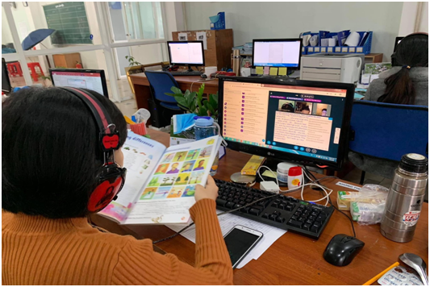

Bắc Ninh đẩy mạnh dạy học qua Internet trong thời gian nghỉ học để phòng chống dịch bệnh COVID-19
Trước diễn biến dịch bệnh Covid-19 trên địa bàn tỉnh, UBND tỉnh Bắc Ninh đã cho phép trẻ, học sinh, sinh viên được nghỉ học từ 29/01/2021 để thực hiện công tác phòng chống dịch COVID-19; ngày 02/02/2021 Sở Giáo dục và Đào tạo Bắc Ninh (GDĐT) đã ban hành các công văn số 165/SGDĐT-GDTrH và 171/SGDĐT-GDTrH gửi Hiệu trưởng các trường THPT; Giám đốc Trung tâm GDTX, GDNN-GDTX; Trưởng phòng GDĐT các huyện, thị xã, thành phố trên địa bàn tỉnh hướng dẫn tổ chức dạy học qua Internet trong thời gian phòng, chống dịch bệnh Covid-19.Trước diễn biến dịch bệnh Covid-19 trên địa bàn tỉnh, UBND tỉnh Bắc Ninh đã cho phép trẻ, học sinh, sinh viên được nghỉ học từ 29/01/2021 để thực hiện công tác phòng chống dịch COVID-19; ngày 02/02/2021 Sở Giáo dục và Đào tạo Bắc Ninh (GDĐT) đã ban hành các công văn số 165/SGDĐT-GDTrH và 171/SGDĐT-GDTrH gửi Hiệu trưởng các trường THPT; Giám đốc Trung tâm GDTX, GDNN-GDTX; Trưởng phòng GDĐT các huyện, thị xã, thành phố trên địa bàn tỉnh hướng dẫn tổ chức dạy học qua Internet trong thời gian phòng, chống dịch bệnh Covid-19.

Dạy học trực tuyến qua Internet tại trường phổ thông quốc tế Kinh Bắc
Thời gian từ ngày 08/02/2021 đến hết ngày 16/02/2021 các đơn vị thực hiện nghỉ Tết Nguyên đán Tân Sửu theo hướng dẫn tại Công văn số 89/SGDĐT-TCHC ngày 22/01/2021 của Sở GDĐT Bắc Ninh.
Sở GDĐT cũng yêu cầu các cơ sở giáo dục chủ động bổ sung cơ sở vật chất đảm bảo các điều kiện trong công tác phòng chống dịch bệnh Covid-19 tại đơn vị; Khi học sinh đi học trở lại cần rà soát nội dung dạy học, đánh giá kết quả học tập qua internet, hướng dẫn giáo viên tinh giản nội dung dạy học theo hướng kế thừa những nội dung, kiến thức đã học qua internet nhằm tối ưu thời gian và nội dung kiến thức cần tiếp tục dạy học, hoàn thành chương trình giáo dục phổ thông theo quy định của Bộ GDĐT.